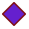
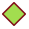
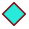

<!doctype html>
<html lang="en">
    <head>
        <meta charset="utf-8">
        <meta http-equiv="X-UA-Compatible" content="IE=edge">
        <meta name="viewport" content="initial-scale=1,user-scalable=no,maximum-scale=1,width=device-width">
        <meta name="mobile-web-app-capable" content="yes">
        <meta name="apple-mobile-web-app-capable" content="yes">
        <link rel="stylesheet" href="css/leaflet.css"><link rel="stylesheet" href="css/L.Control.Locate.min.css">
        <link rel="stylesheet" href="css/qgis2web.css"><link rel="stylesheet" href="css/fontawesome-all.min.css">
        <link rel="stylesheet" href="css/leaflet-search.css">
        <link rel="stylesheet" href="css/leaflet-control-geocoder.Geocoder.css">
        <style>
        #map {
            width: 1090px;
            height: 805px;
        }
        </style>
        <title></title>
    </head>
    <body>
        <div id="map">
        </div>
        <script src="js/qgis2web_expressions.js"></script>
        <script src="js/leaflet.js"></script><script src="js/L.Control.Locate.min.js"></script>
        <script src="js/leaflet-svg-shape-markers.min.js"></script>
        <script src="js/leaflet.rotatedMarker.js"></script>
        <script src="js/leaflet.pattern.js"></script>
        <script src="js/leaflet-hash.js"></script>
        <script src="js/Autolinker.min.js"></script>
        <script src="js/rbush.min.js"></script>
        <script src="js/labelgun.min.js"></script>
        <script src="js/labels.js"></script>
        <script src="js/leaflet-control-geocoder.Geocoder.js"></script>
        <script src="js/leaflet-search.js"></script>
        <script src="data/Point_RR_2.js"></script>
        <script>
        var highlightLayer;
        function highlightFeature(e) {
            highlightLayer = e.target;

            if (e.target.feature.geometry.type === 'LineString') {
              highlightLayer.setStyle({
                color: '#ffff00',
              });
            } else {
              highlightLayer.setStyle({
                fillColor: '#ffff00',
                fillOpacity: 1
              });
            }
            highlightLayer.openPopup();
        }
        var map = L.map('map', {
            zoomControl:true, maxZoom:26, minZoom:1
        })
        var hash = new L.Hash(map);
        map.attributionControl.setPrefix('<a href="https://github.com/tomchadwin/qgis2web" target="_blank">qgis2web</a> &middot; <a href="https://leafletjs.com" title="A JS library for interactive maps">Leaflet</a> &middot; <a href="https://qgis.org">QGIS</a>');
        var autolinker = new Autolinker({truncate: {length: 30, location: 'smart'}});
        function removeEmptyRowsFromPopupContent(content, feature) {
         var tempDiv = document.createElement('div');
         tempDiv.innerHTML = content;
         var rows = tempDiv.querySelectorAll('tr');
         for (var i = 0; i < rows.length; i++) {
             var td = rows[i].querySelector('td.visible-with-data');
             var key = td ? td.id : '';
             if (td && td.classList.contains('visible-with-data') && feature.properties[key] == null) {
                 rows[i].parentNode.removeChild(rows[i]);
             }
         }
         return tempDiv.innerHTML;
        }
        document.querySelector(".leaflet-popup-pane").addEventListener("load", function(event) {
          var tagName = event.target.tagName,
            popup = map._popup;
          // Also check if flag is already set.
          if (tagName === "IMG" && popup && !popup._updated) {
            popup._updated = true; // Set flag to prevent looping.
            popup.update();
          }
        }, true);
        L.control.locate({locateOptions: {maxZoom: 19}}).addTo(map);
        var bounds_group = new L.featureGroup([]);
        function setBounds() {
            if (bounds_group.getLayers().length) {
                map.fitBounds(bounds_group.getBounds());
            }
        }
        map.createPane('pane_OSMStandard_0');
        map.getPane('pane_OSMStandard_0').style.zIndex = 400;
        var layer_OSMStandard_0 = L.tileLayer('http://tile.openstreetmap.org/{z}/{x}/{y}.png', {
            pane: 'pane_OSMStandard_0',
            opacity: 1.0,
            attribution: '<a href="https://www.openstreetmap.org/copyright">© OpenStreetMap contributors, CC-BY-SA</a>',
            minZoom: 1,
            maxZoom: 26,
            minNativeZoom: 0,
            maxNativeZoom: 19
        });
        layer_OSMStandard_0;
        map.addLayer(layer_OSMStandard_0);
        map.createPane('pane_GoogleHybrid_1');
        map.getPane('pane_GoogleHybrid_1').style.zIndex = 401;
        var layer_GoogleHybrid_1 = L.tileLayer('https://mt1.google.com/vt/lyrs=y&x={x}&y={y}&z={z}', {
            pane: 'pane_GoogleHybrid_1',
            opacity: 1.0,
            attribution: '<a href="https://www.google.at/permissions/geoguidelines/attr-guide.html">Map data ©2015 Google</a>',
            minZoom: 1,
            maxZoom: 26,
            minNativeZoom: 0,
            maxNativeZoom: 20
        });
        layer_GoogleHybrid_1;
        map.addLayer(layer_GoogleHybrid_1);
        function pop_Point_RR_2(feature, layer) {
            layer.on({
                mouseout: function(e) {
                    for (i in e.target._eventParents) {
                        e.target._eventParents[i].resetStyle(e.target);
                    }
                    if (typeof layer.closePopup == 'function') {
                        layer.closePopup();
                    } else {
                        layer.eachLayer(function(feature){
                            feature.closePopup()
                        });
                    }
                },
                mouseover: highlightFeature,
            });
            var popupContent = '<table>\
                    <tr>\
                        <td colspan="2">' + (feature.properties['id'] !== null ? autolinker.link(feature.properties['id'].toLocaleString()) : '') + '</td>\
                    </tr>\
                    <tr>\
                        <th scope="row">NAME</th>\
                        <td>' + (feature.properties['NAME'] !== null ? autolinker.link(feature.properties['NAME'].toLocaleString()) : '') + '</td>\
                    </tr>\
                </table>';
            layer.bindPopup(popupContent, {maxHeight: 400});
            var popup = layer.getPopup();
            var content = popup.getContent();
            var updatedContent = removeEmptyRowsFromPopupContent(content, feature);
            popup.setContent(updatedContent);
        }

        function style_Point_RR_2_0(feature) {
            switch(String(feature.properties['NAME'])) {
                case 'base PUI':
                    return {
                pane: 'pane_Point_RR_2',
                shape: 'diamond',
                radius: 12.0,
                opacity: 1,
                color: 'rgba(128,17,25,1.0)',
                dashArray: '',
                lineCap: 'butt',
                lineJoin: 'miter',
                weight: 2.0,
                fill: true,
                fillOpacity: 1,
                fillColor: 'rgba(101,32,206,1.0)',
                interactive: false,
            }
                    break;
                case 'Peage':
                    return {
                pane: 'pane_Point_RR_2',
                shape: 'diamond',
                radius: 12.0,
                opacity: 1,
                color: 'rgba(128,17,25,1.0)',
                dashArray: '',
                lineCap: 'butt',
                lineJoin: 'miter',
                weight: 2.0,
                fill: true,
                fillOpacity: 1,
                fillColor: 'rgba(162,221,79,1.0)',
                interactive: false,
            }
                    break;
                case 'Total Kous':
                    return {
                pane: 'pane_Point_RR_2',
                shape: 'diamond',
                radius: 12.0,
                opacity: 1,
                color: 'rgba(128,17,25,1.0)',
                dashArray: '',
                lineCap: 'butt',
                lineJoin: 'miter',
                weight: 2.0,
                fill: true,
                fillOpacity: 1,
                fillColor: 'rgba(39,234,218,1.0)',
                interactive: false,
            }
                    break;
            }
        }
        map.createPane('pane_Point_RR_2');
        map.getPane('pane_Point_RR_2').style.zIndex = 402;
        map.getPane('pane_Point_RR_2').style['mix-blend-mode'] = 'normal';
        var layer_Point_RR_2 = new L.geoJson(json_Point_RR_2, {
            attribution: '',
            interactive: false,
            dataVar: 'json_Point_RR_2',
            layerName: 'layer_Point_RR_2',
            pane: 'pane_Point_RR_2',
            onEachFeature: pop_Point_RR_2,
            pointToLayer: function (feature, latlng) {
                var context = {
                    feature: feature,
                    variables: {}
                };
                return L.shapeMarker(latlng, style_Point_RR_2_0(feature));
            },
        });
        bounds_group.addLayer(layer_Point_RR_2);
        map.addLayer(layer_Point_RR_2);
        map.on("zoomend", function(e) {
            if (map.getZoom() <= 19 && map.getZoom() >= 12) {
                map.addLayer(layer_Point_RR_2);
            } else if (map.getZoom() > 19 || map.getZoom() < 12) {
                map.removeLayer(layer_Point_RR_2);
            }
        });
            if (map.getZoom() <= 19 && map.getZoom() >= 12) {
                map.addLayer(layer_Point_RR_2);
            } else if (map.getZoom() > 19 || map.getZoom() < 12) {
                map.removeLayer(layer_Point_RR_2);
            }
        var osmGeocoder = new L.Control.Geocoder({
            collapsed: true,
            position: 'topleft',
            text: 'Search',
            title: 'Testing'
        }).addTo(map);
        document.getElementsByClassName('leaflet-control-geocoder-icon')[0]
        .className += ' fa fa-search';
        document.getElementsByClassName('leaflet-control-geocoder-icon')[0]
        .title += 'Search for a place';
        var baseMaps = {};
        L.control.layers(baseMaps,{'Point_RR<br /><table><tr><td style="text-align: center;"></td><td>base PUI</td></tr><tr><td style="text-align: center;"></td><td>Peage</td></tr><tr><td style="text-align: center;"></td><td>Total Kous</td></tr></table>': layer_Point_RR_2,"Google Hybrid": layer_GoogleHybrid_1,"OSM Standard": layer_OSMStandard_0,},{collapsed:false}).addTo(map);
        map.on("zoomend", function(){

                if (map.hasLayer(layer_Point_RR_2)) {
                    if (map.getZoom() <= 8 && map.getZoom() >= 19) {
                        layer_Point_RR_2.eachLayer(function (layer) {
                            layer.openTooltip();
                        });
                    } else {
                        layer_Point_RR_2.eachLayer(function (layer) {
                            layer.closeTooltip();
                        });
                    }
                }
        });
        setBounds();
        var i = 0;
        layer_Point_RR_2.eachLayer(function(layer) {
            var context = {
                feature: layer.feature,
                variables: {}
            };
            layer.bindTooltip((layer.feature.properties['NAME'] !== null?String('<div style="color: #323232; font-size: 10pt; font-family: \'Arial\', sans-serif;">' + layer.feature.properties['NAME']) + '</div>':''), {permanent: true, offset: [-0, -16], className: 'css_Point_RR_2'});
            labels.push(layer);
            totalMarkers += 1;
              layer.added = true;
              addLabel(layer, i);
              i++;
        });
                if (map.hasLayer(layer_Point_RR_2)) {
                    if (map.getZoom() <= 8 && map.getZoom() >= 19) {
                        layer_Point_RR_2.eachLayer(function (layer) {
                            layer.openTooltip();
                        });
                    } else {
                        layer_Point_RR_2.eachLayer(function (layer) {
                            layer.closeTooltip();
                        });
                    }
                }
        map.addControl(new L.Control.Search({
            layer: layer_Point_RR_2,
            initial: false,
            hideMarkerOnCollapse: true,
            propertyName: 'NAME'}));
        document.getElementsByClassName('search-button')[0].className +=
         ' fa fa-binoculars';
        resetLabels([layer_Point_RR_2]);
        map.on("zoomend", function(){
            resetLabels([layer_Point_RR_2]);
        });
        map.on("layeradd", function(){
            resetLabels([layer_Point_RR_2]);
        });
        map.on("layerremove", function(){
            resetLabels([layer_Point_RR_2]);
        });
        </script>
    </body>
</html>
